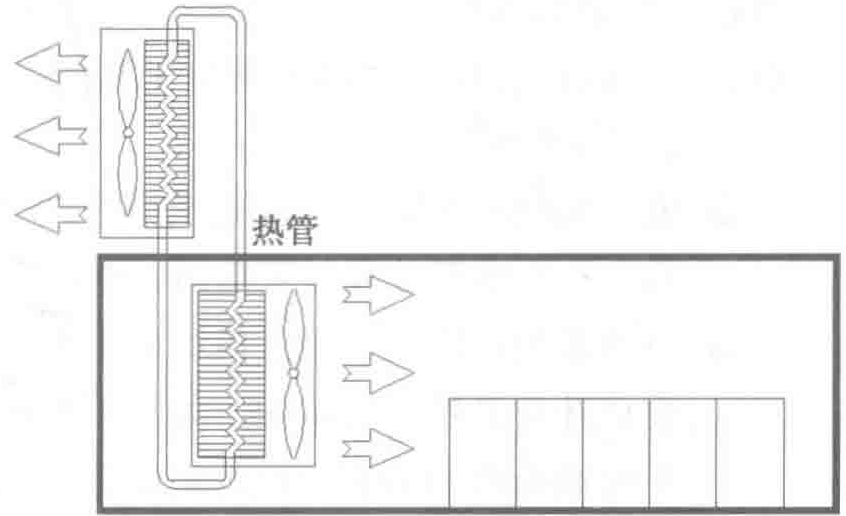
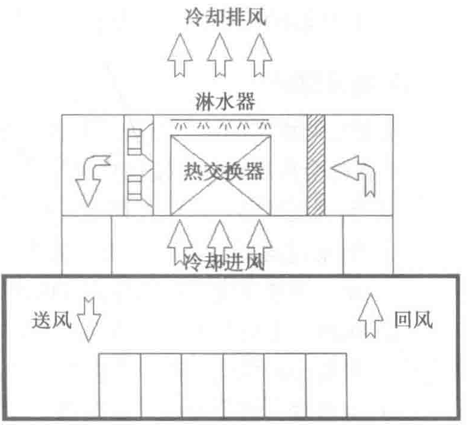

热管系统，但跟普通压缩机比制冷有一定节能效果。图4-25为热管空调的简单原理示意图。

目前热管工程造价较高，施工难度大，运行中受到外界空气污染而导致热管表面脏堵的现象较常见，其应用还在探索阶段。
4. 蒸发冷却式
蒸发冷却从热学原理上是利用流体沸腾时的汽化潜热带走热量。由于流体的汽化潜热要比流体的比热大很多，所以蒸发冷却的效果更为显著。蒸发冷却有直接蒸发冷却和间接蒸发冷却之分。直接蒸发冷却相当于喷水室，降温的同时会增加空气湿度，在数据中心内很少全部采用此种制冷方式。间接蒸发冷却式，即利用室外水源蒸发时吸收热量的原理，通过空气/水－空气换热带走室内循环空气中的热量。在室外环境温度较低时，也可以变成空气－空气换热器。同时在设备合理位置还可以引入新风。如果蒸发冷却的换热量不够，同样可以在机组中增加压缩机或水冷盘管补充制冷。一方面避免了室内外空气的直接接触，另一方面提高了可利用冷源的温度，是一种比较理想的技术方向，已有少量的应用案例，但目前来说市场价格较常规冷却设备高。
此设备的主要技术为换热芯，目前有金属和非金属之分。金属换热芯的热交换率较高，但是耐腐蚀性差，加工难度较大。

非金属的耐腐蚀性相对较好，但结构强度相对较差。另外水处理方面，由于水分不断在蒸发，会存在结垢现象。结垢会堵塞换热芯的气流通道，使换热效率下降，所以对水处理也有一定要求。简单示意如图4-26所示。
5. 直接或间接水冷式
顾名思义，就是将室外温度较低且相对稳定的水源直接或间接引入盘管设备制冷。直接水冷系统对水源质量及环保要求很高，应用极少。间接水冷技术，比如引用海水，通过水－水换热器来进行冷却，在国外部分案例中有所应用。
4.9 主要设备日常维护
1. 冷水机组
冷水机组作为制冷的核心部件，主要由电气系统、机械系统、供油系统、控制系统等